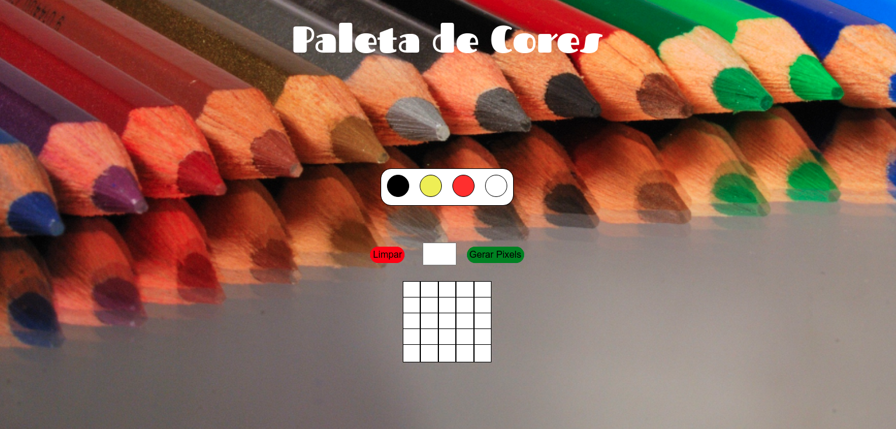
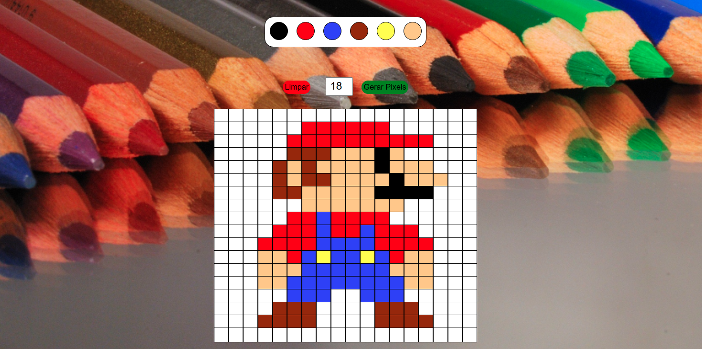

Pixels Art
Descrição do Projeto
Pixels Art é um projeto requerido no curso de Fundamentos de Desenvolvimento Web da Trybe , criando um quadro do tamanho ajustável e disponível para ser pintado com uma paleta de cores.
Este projeto Pixels Art foi um
projeto inicial para que pudessemos trabalhar melhor com o DOM no JavaScript, Css e HTML.
← Voltar ao portifolio